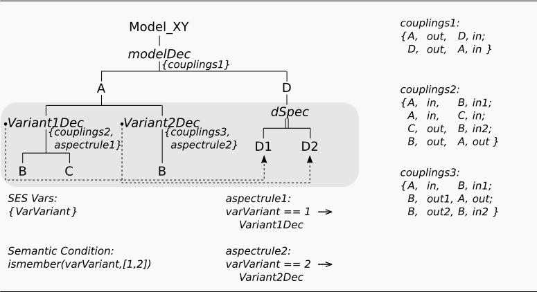
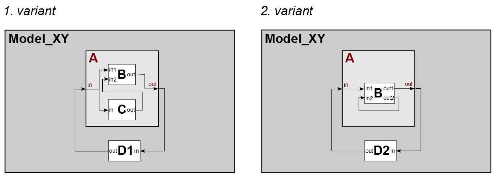

Constraints Between Decision Nodes
Motivation
This example shows, how you can define constraints between decision nodes. The problem statement is analogous to example 3, where it is solved using Aspect-Siblings. The SES specifies 2 different model variants.
Basic SES:

In the SES specified model structures:

Entities
Variant 1 - The model consist of:
- atomic models (AM): B, C, D1
- coupled models (CM): A
Variant 2 - The model consist of:
- atomic models (AM): B, D2
- coupled models (CM): A
Description
Connecting Decision Nodes by Selection Contraints
If you define a set of model variants, where the selection of a component requires the selection of another component you can specify this using Selection Constraints. You can define Selection Contraints under the tab SelConst. In this example, the specialized component D1 must always be selected when the Aspect variant1DEC is chosen and D2 has to be selected when the Aspect variant2DEC is chosen. Hence, you have to define the Aspects variant1DEC and variant2DEC as sources (From) and the entities D1, D2 as sinks (To).
Navigation in Tab SelConst
You can also choose more sink nodes for one source node. A source node can only exist one time in the table. In order to select nodes for a constraint, click on the desired node in the tree and use the arrow buttons to insert or extract it.
Constraints including MultiAspects
If you want define selection constrains with dependencies from the Number Of Replications (NOF) property of MultiAspects, you have to use SES Functions. Basics to SES Functions are discussed in example 7.
Following, the basic procedure for specifying such cases using SES Functions.
CASE 1:
- Source: Aspect Siblings OR Spec OR MAspect
- Sink: MAspect
Define at the sink MultiAspect the NOF property via an SES Function (e.g. myNumRepFcn), whose input parameter codes the current value for the NOF property depending on an SES Variable (e.g. sourceVar), whose value is set at the source node, such as
- myNumRepFcn(sourceVar)
CASE 2:
- Source: MAspect
- Sink: Aspect Siblings OR Spec
- mySelRuleFcn(numRep)
Limitation
Not all decision nodes in an SES are connectable using Selection Constraints. It depends on the hierarchical structure. Decision nodes in the same tree path are not connectable.